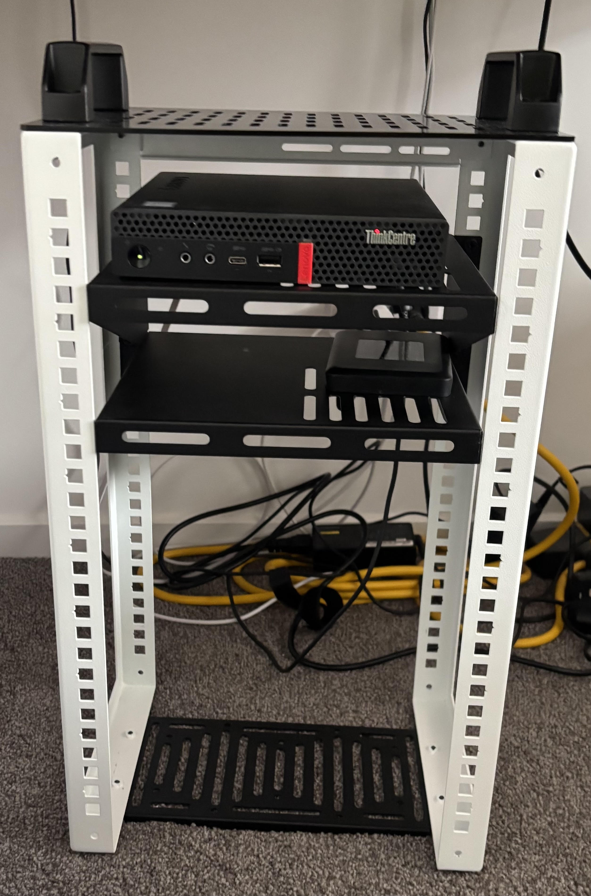

Here you can find some of my projects that I have worked on. These projects showcase my skills in web development, server management, and other areas of IT. Some more information about each project can be found on my GitHub profile, linked on the contact page.
Projects:
Personal server
- Hardware:
- Server - Lenovo ThinkCentre M720q
- Storage - 1TB hard drive
- Server rack - Mini server rack
- Software:
- OS - Windows 11
- Media Server - Jellyfin
- Movie Library - Radarr
- TV Show Library - Sonarr
- Indexers - Prowlarr
- Download Client - qBittorrent
- VPN - Tailscale
Below is a photo of my personal server:

GitHub Projects
Below is a list of my GitHub projects:
- Hi-Fi prototype (This is the Hi-Fi prototype for my project for my BCDE311 course at Ara Institute of Canterbury.)
- Pong game (A simple implementation of the classic Pong game.)
- Flappy bird game (A clone of the popular Flappy Bird game.)
- Platformer game (A basic platformer game with simple mechanics.)
- Hangman game (A text-based implementation of the classic Hangman game.)
- BCDE211 project (This is the final project for my BCDE211 course at Ara Institute of Canterbury.)